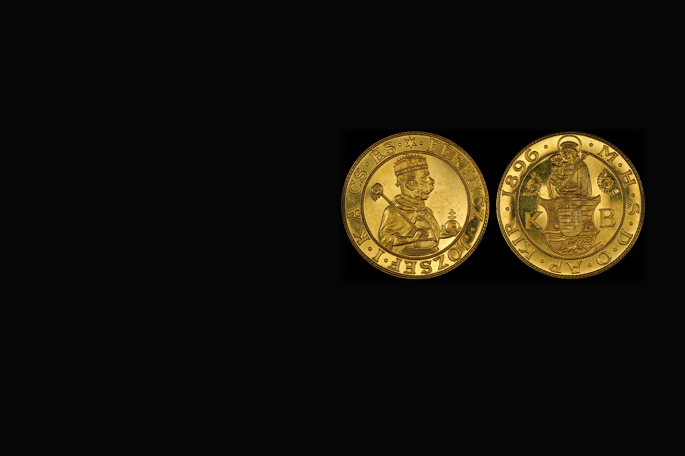
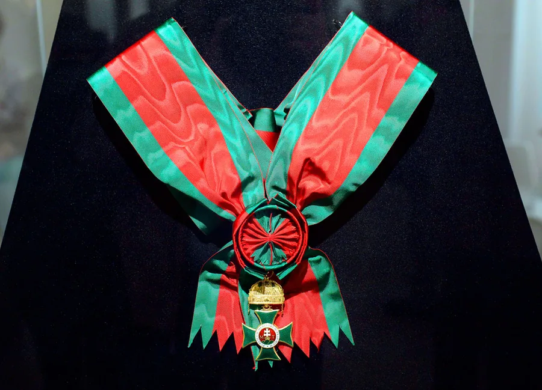

Érmék és kitüntetések
Egy doboznyi régi pénz, egy gondosan rendezett album, vagy a nagyapa kitüntetése. Darabonként nézzük meg, és megmondjuk, a fém vagy a gyűjtői érték számít-e.
Két külön világ
Egy érmét vagy a nemesfém súlya szerint, vagy gyűjtői darabként értékelünk, attól függően, melyik ér többet Önnek.
Érmék és régi pénz
- Aranyérme
- dukát, korona, befektetési érme, emlékérme
- Ezüstpénz
- régi forint, pengő, korona, tallér
- Gyűjtemény
- album, éremtartó, évsor, külföldi érmék
- Papírpénz
- régi bankjegy, különösen jó állapotban

Kitüntetések és jelvények
- Katonai kitüntetés
- érdemérem, kereszt, szalagsáv, igazolvánnyal vagy anélkül
- Polgári érdemérem
- munkaérdem, szolgálati és emlékérem
- Jelvény
- egyesületi, sport- és cserkészjelvény, zománcos darab
- Emlékplakett
- bronz, ezüst, eredeti dobozban
Kérjük, ne tisztítsa meg az érméket
A dörzsölés, a polírozás és a vegyszeres tisztítás karcolja a felületet, és ezzel egy gyűjtői érme értéke a töredékére eshet.
Hozza el úgy, ahogy van, lehetőleg az eredeti tartójában. Ha albumban vannak, ne vegye ki őket.
Néhány gyakori érme, tájékoztató áron
Az ár a nemesfém-tartalomból számolt alsó érték. A drágább darabokat és a komolyabb numizmatikai évjáratokat is megvesszük: ha egy érme évjáratában ritkább, vagy jobb állapotban van, az ára ennek a többszöröse.
| Érme | Kor | Súly és finomság | Tájékoztató ár |
|---|---|---|---|
| 10 korona, arany | Ferenc József, 1892-1915 | 3,39 g, 900 | 117 000-135 000 Ft/db |
| 20 korona, arany | Ferenc József, 1892-1916 | 6,78 g, 900 | 234 000-271 000 Ft/db |
| 1 dukát, arany | osztrák, Ferenc József | 3,49 g, 986 | 132 000-153 000 Ft/db |
| 4 dukát, arany | osztrák, Ferenc József | 13,96 g, 986 | 530 000-612 000 Ft/db |
| 5 korona, ezüst | Ferenc József, 1900-1909 | 24 g, 900 | 8 800-11 300 Ft/db |
| 1 korona, ezüst | Ferenc József, 1892-1916 | 5 g, 835 | 1 700-2 200 Ft/db |
| 5 pengő, ezüst | 1930-1939 | 25 g, 640 | 6 500-8 400 Ft/db |
| 2 pengő, ezüst | 1929-1939 | 10 g, 640 | 2 600-3 300 Ft/db |
Tájékoztató ár, a végleges ajánlat bevizsgálás után.
Egy gyűjteményt nyugodtan átnézünk
Egy nagyobb gyűjteményhez kimegyünk Önhöz, Budapesten díjmentesen.
- Telefon
- 06 20 620 1377
- Üzlet
- 1067 Budapest, Teréz krt. 35.
- Házhoz
- Időpontot kérek otthonra